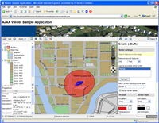
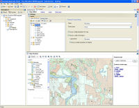

Click the images to see a larger version.
AJAX based MapGuide Viewer
 The AJAX Viewer provides map display and interaction in almost any browser, including Safari, without having to download a browser plug-in. This viewer ensures that any user on any platform can access designs and maps without requiring a specific browser.
|
DWF based MapGuide Viewer
 The DWF Viewer uses an ActiveX control to provide map display and interaction on Windows systems running Internet Explorer. This gives users powerful yet lightweight viewing of maps, designs, and related data. Use of DWF technology also provides high quality printing and plotting, as well as support for a “disconnected mode” that makes it easy to take spatial data into the field.
|
Spatial Analysis and Reporting

MapGuide Open Source includes a full suite of geospatial analysis capabilities – here, creating buffer zones around a selected parcel.
|
Autodesk MapGuide Studio

Autodesk MapGuide Studio is designed to work with MapGuide Open Source. It is a complete authoring application that can be used to load and configure spatial data sources, produce attractive thematic maps, define the user interface elements present in the viewer, and integrate application logic written in PHP, ASP.NET, or JSP.
|
Google Earth as a MapGuide Client
 MapGuide Open Source can use Google Earth as a client by taking advantage of Google Earth's Network Links feature and the MapGuide Web API's. Here we see parcel boundaries served from a MapGuide Open Source web service and delivered as a KML file to Google Earth for display with other map data.
|
Web Based Site Admin Application

MapGuide Open Source includes a browser-based tool that allows remote administration and configuration of servers.
|
 The AJAX Viewer provides map display and interaction in almost any browser, including Safari, without having to download a browser plug-in. This viewer ensures that any user on any platform can access designs and maps without requiring a specific browser.
The AJAX Viewer provides map display and interaction in almost any browser, including Safari, without having to download a browser plug-in. This viewer ensures that any user on any platform can access designs and maps without requiring a specific browser. The DWF Viewer uses an ActiveX control to provide map display and interaction on Windows systems running Internet Explorer. This gives users powerful yet lightweight viewing of maps, designs, and related data. Use of DWF technology also provides high quality printing and plotting, as well as support for a “disconnected mode” that makes it easy to take spatial data into the field.
The DWF Viewer uses an ActiveX control to provide map display and interaction on Windows systems running Internet Explorer. This gives users powerful yet lightweight viewing of maps, designs, and related data. Use of DWF technology also provides high quality printing and plotting, as well as support for a “disconnected mode” that makes it easy to take spatial data into the field. MapGuide Open Source can use Google Earth as a client by taking advantage of Google Earth's Network Links feature and the MapGuide Web API's. Here we see parcel boundaries served from a MapGuide Open Source web service and delivered as a KML file to Google Earth for display with other map data.
MapGuide Open Source can use Google Earth as a client by taking advantage of Google Earth's Network Links feature and the MapGuide Web API's. Here we see parcel boundaries served from a MapGuide Open Source web service and delivered as a KML file to Google Earth for display with other map data.
 MapGuide Open Source includes a browser-based tool that allows remote administration and configuration of servers.
MapGuide Open Source includes a browser-based tool that allows remote administration and configuration of servers.